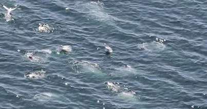

Adrien took the camera, and Clem spoke with many people that live around the glowworms: Alex the bartender told us how the glowworms attract each day more and more tourists, Travis the biologist shows us how to take care of the different biological parameters that are essential for the survival of the glowworms, Dave the environmental officer explains to us the importance of protecting the Waitomo river that flows to the caves and feeds the glowworms, and Huia the Maori guide tells us the Maori legend regarding the glowworms light, and gives Clem a Maori goodbye :) Funny enough, the Maori in New Zealand say hello the same way the Inuits in Greenland do...
Wow! What a day! We are now out of the cave, bye bye glowworms! We are heading back to Auckland with our small van, where another friend is waiting for us!
